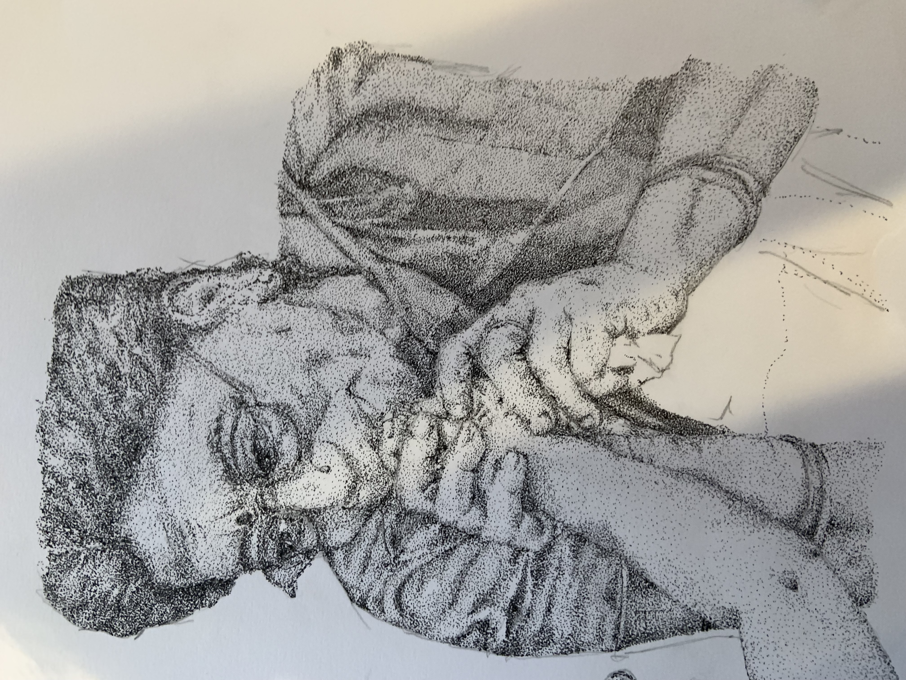
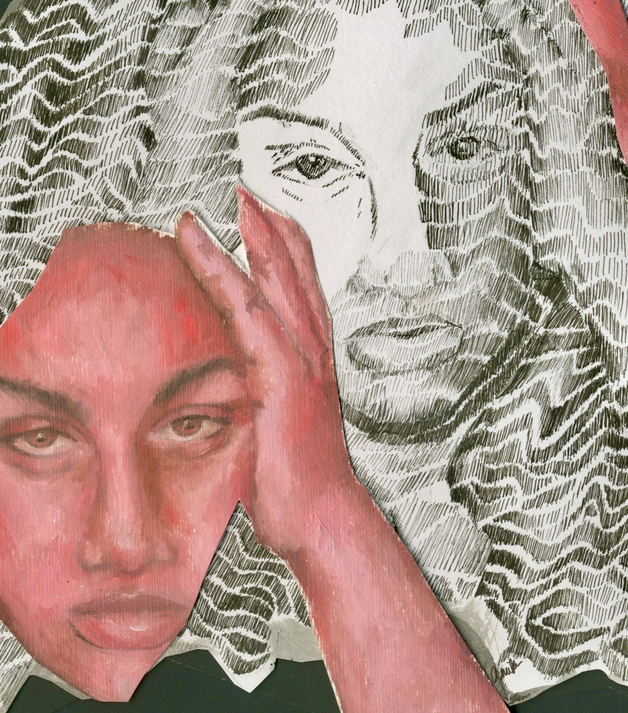
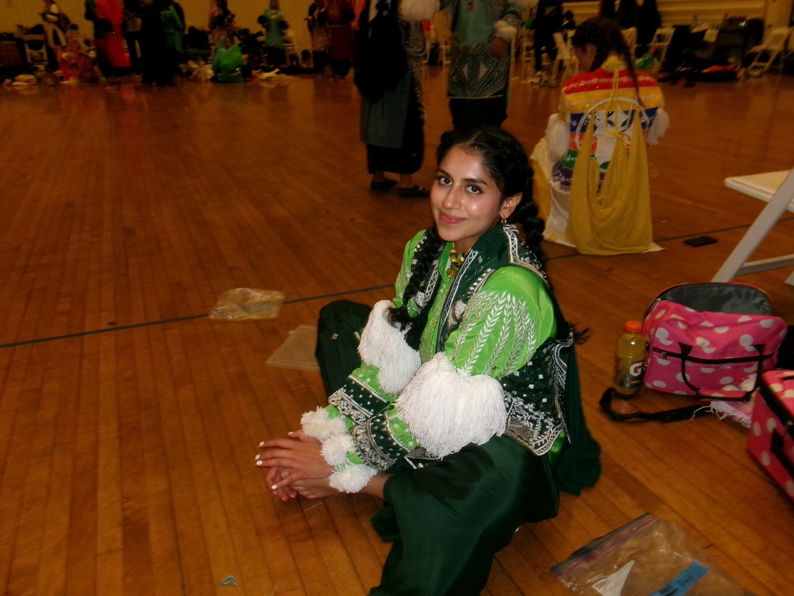
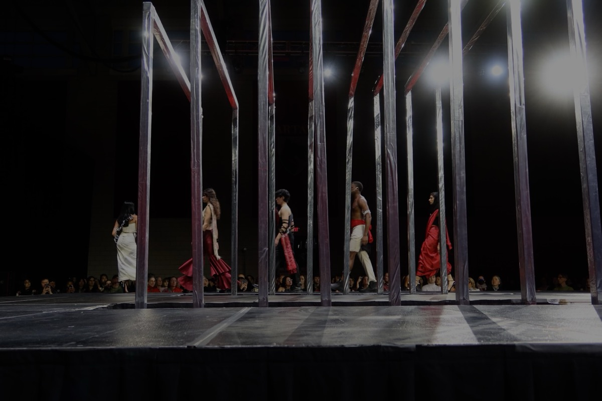
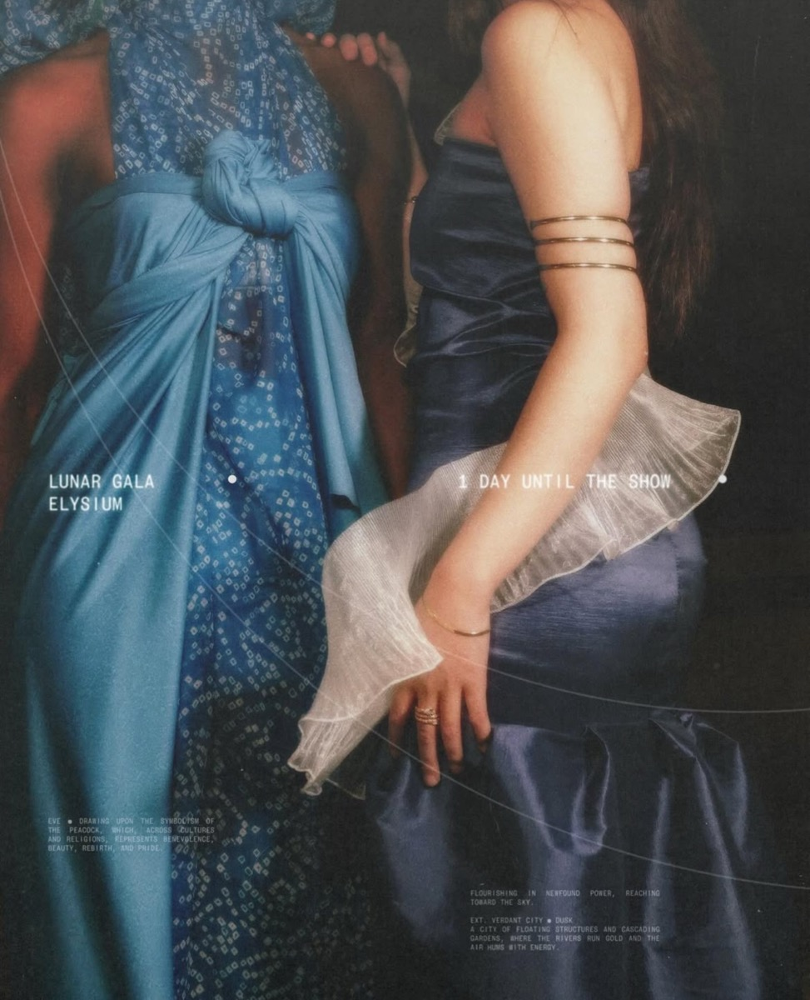
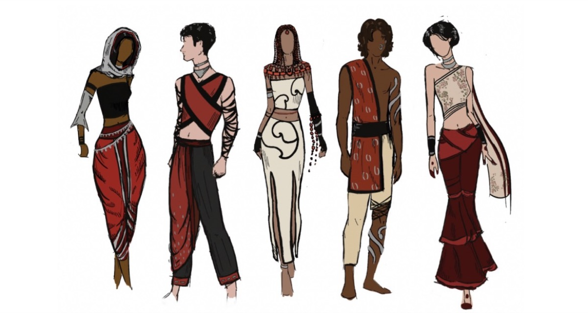
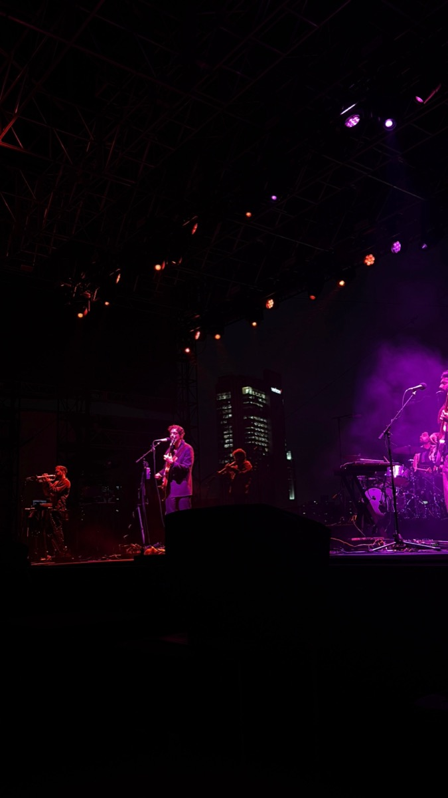
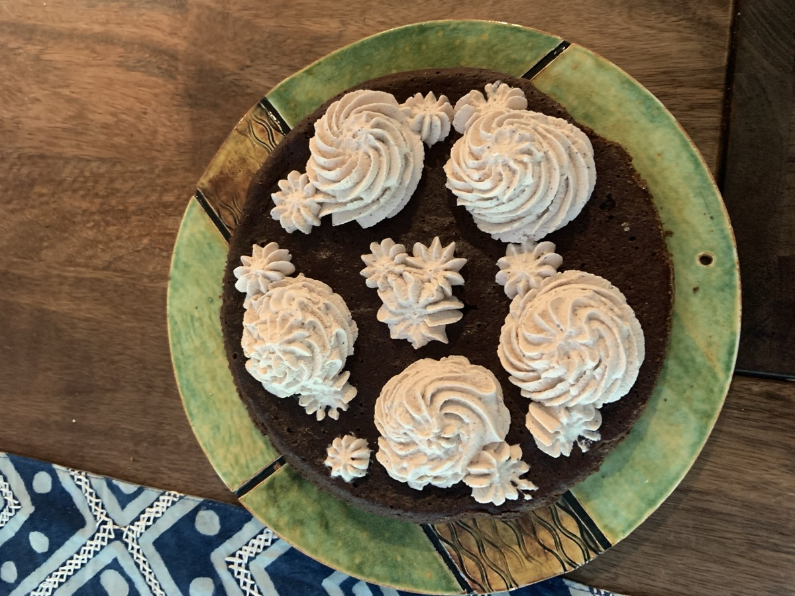
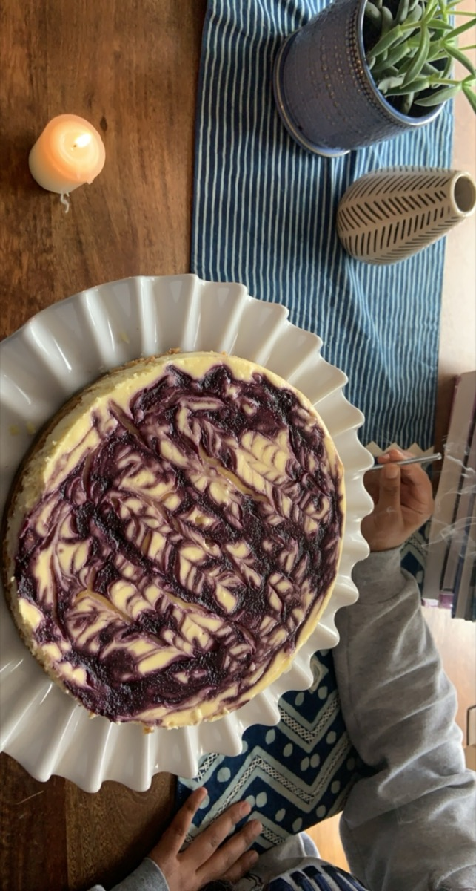
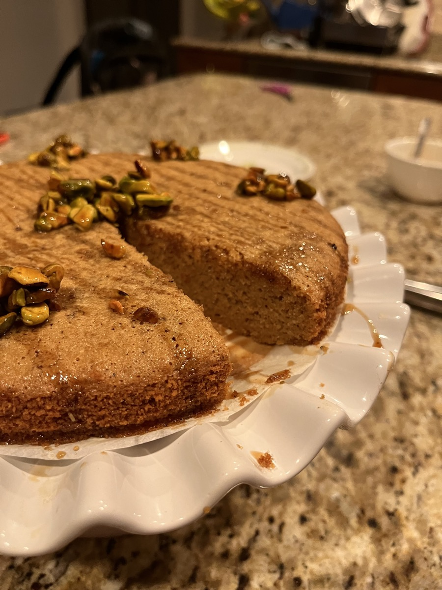

about.
Hi, I'm Anika!
I love thinking about how people see, feel, and make sense of the world, and how technology shapes that. I’ve been down some wonderfully winding paths across virus research, neuroscience research, software engineering, and creative exploration. What’s stayed consistent (and grown over the years) is that I love asking questions, paying attention to how people see and interpret their surroundings.
Right now, I'm working on my Master's at UC Berkeley's School of Information, focusing on human-computer interaction. Before this, I studied computational neuroscience and human-computer interaction at Carnegie Mellon, where I worked on context-aware AR interfaces at the Augmented Perception Lab.
My curiosity usually lives somewhere between cognition, design, and questioning about what happens when we interact with digital systems. You can usually find me exploring how people express identity and creativity: through painting, fashion design, or discovering new music. All of that filters into how I think about designing for perception and experience.
Exploring @ University of California, Berkeley
of Carnegie Mellon University
outside of work.
Play around with the turntable to check out some of the ways I fill my time outside of work.
expression study with oil paints

pointilism sketch of my grandmother

faces and textures study
arangetram pics - i'm supposed to be an alligator here
some photoshoots

stretching before a cmu bhangra performance

lunar gala: nandini

lunar gala: eve

some of my sketches
mykonos, greece
jardin majorelle, marrakech
gozo caves, malta
street musicians in barcelona
piano jam with friends

peter cat recording co. live!

chocolate flourless cake

cheesecake (I might be taking too much credit from my sister)

pistachio cardamom cake